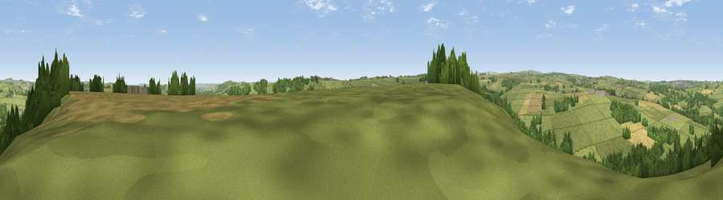

Cornsay Hill
#23429 in England · top 53% of its area beats it · near SatleyWhere it is
The exact computed spot (NZ 14115 43056). Click the marker for map links.
The view, rendered

A 360° render of this exact spot computed from the terrain model, tree cover and land cover — summer colours, afternoon light, calibrated against photographs of famous viewpoints. Real trees, hedges and buildings will differ in detail.
The panorama
Grey silhouette: terrain skyline in each direction (720 bearings, Earth curvature and refraction included). Dashed green: skyline with trees (+15 m) and buildings (+8 m) as obstacles. Blue strip: how far the ground is visible on each bearing.
Where the view opens
Wedge length = distance to the farthest visible ground on that bearing (vegetation-aware). Rings at 10, 25 and 50 km.
What fills the view
72% grassland · 17% woodland · 10% cropland · 1% built-up
Angular shares of the visible panorama (visual magnitude), not map area. Landscape diversity 0.35 (0–1 Shannon).
Key numbers
More beautiful places nearby
The staircase of upgrades: each row has a higher view potential than everything closer. Driving times are estimates from straight-line distance, calibrated against real road routing — check an actual route before setting out.
| Place | Direction | Drive | Score |
|---|---|---|---|
| Viewpoint near East Hedleyhope | SSE · 2 km | ~6 min | 51.8 |
| Viewpoint near Lanchester | N · 4 km | ~8 min | 57.4 |
| Greenland Bank | E · 5 km | ~10 min | 58.3 |
| Viewpoint near Tow Law | S · 5 km | ~10 min | 60.1 |
| Billy Hill | SSE · 5 km | ~11 min | 66.4 |
| Brandon Hill | ESE · 7 km | ~15 min | 69.7 |
| Viewpoint near Billy Row | SSE · 7 km | ~15 min | 70.3 |
| Viewpoint near Edmondsley | ENE · 9 km | ~19 min | 72.6 |
54.78221, -1.78205 · source: dobih hill · position refined by local search. Computed location — check access rights before visiting.